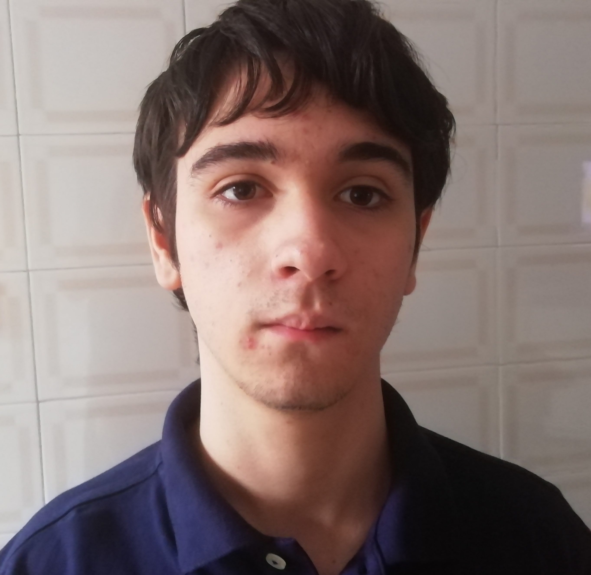

marco garabello
Web Developer
Via carcone 26/3. Villastellone
marco.garabello@istitutoagnelli.it
3773164021
profilo
Studente presso L'Istiuto Internazionel Edoardo Agnelli, frequento il corso di informatica al quato anno, appassionato di informatica sin da bambino (per colpa dei miei genitori), è nei miei piani frequentare l'università dopo il diploma (Ingenieria Informatica)
esperienze
ITI presso IStituto Internazionale Agnelli
Sto frequentando il 4° anno persso l'ITT Agnelli, ho avuto un esperienza di PCTO con la start-up Alba-Robot e al momento sto scolgendo un progetto con il gruppo Stellantis.
Scuole Medie Istituto Internazionale Agnelli
Ho frequentato 3 anni presso l'Istituto Internazionale Agnelli, durante i quali oltre alle materie curriculari sono state svolete molte esperienze di approfondimento, per esempio sulla ropbotica o sulla bio-etica
cerificazioni
Al momento non possiedo certificazioni ma ho intenzione di conseguire l'Advanced, il CCNA (Cisco Certified Network Associate) e l'AWS Tech Essential